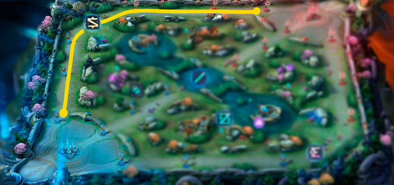
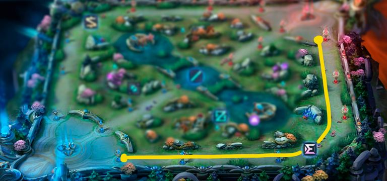
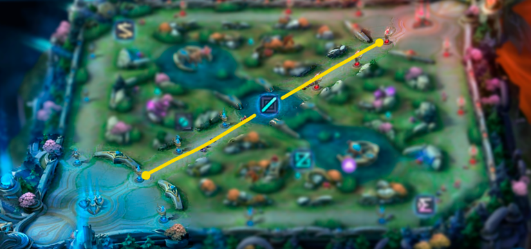
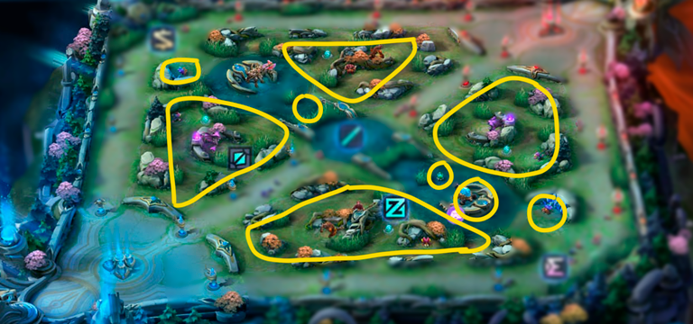
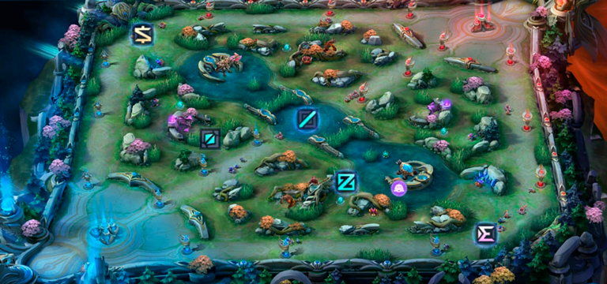

¿Cómo se juega?
Mobile Legends:Bang Bang es un juego de estrategia 5v5, dónde hay 5 líneas por bando y cada una es primordial en la partida. Si una de las dos líneas no está bien cubierta o no tiene alguién que utilice la misma con el héroe correcto, es una partida casi perdida. A continuación te contamos en qué consiste cada una de ellas
Línea de Oro
La línea de oro es utilizada mayormente por el tirador, que es un tipo de héroe que genera un alto porcentaje de daño. Ésta línea se encuentra ubicada al lado lateral izquierdo del campo, dónde generalmente aparece la primera tortuga. Los tiradores, dueños de ésta posición, suelen ser muy débiles al principio del juego, por eso es importante saber posicionarse bien en el campo y farmearse lo más rápido posible con uno o dos items principales, los cuales se obtendrán pagando oro obtenido al matar minions o algún enemigo cercano si es posible. Más tarde, éste tipo de héroe tendrá una mayor eficacia y poder dentro de la partida.
Linea de Experiencia
Es La línea lateral derecha, generalmente utilizada por el héroe de tipo combatiente. Éste puede luchar con tanque y subir rápidamente matando minions de asedio que ofrecen experiencia extra. En el juego inicial, pueden hacer una gran contribución en la lucha por la primera tortuga.
Línea Media
La línea media es la más utilizada por los magos, cuya finalidad es dar visión de ataque a los compañeros de batalla y son los que más daño hacen junto con el jungla. Además, gracias al AOE (Daño en zona), podrán despejar la línea de forma eficaz. Recomendamos aprovechar las torres para farmear constantemente en el juego temprano (Late) y estar preparado para retroceder y deambular en el juego medio.
Linea Jungla
Generalmente los asesinos tomarán esta posición, ya que tienen alta movilidad y ráfagas en objetivos individuales. En el juego temprano, pueden subir de nivel rápidamente matando a los creeps y encontrar oportunidades para matar enemigos individuales mediante el trabajo en equipo. Te recomendamos comprar artículos de equipos de jungla para obtener una bonificación por matar creeps y ponerte el hechizo de "Retribución", el cual te proporcionará mayor daño a los objetivos, enemigos y bonificación por asesinar minions con dicho hechizo.
Linea de Recorrer
Sin duda, esta es la línea ideal y obligatoria para el héroe tanque, ya que tiene como finalidad ayudar al equipo como soporte y recorriendo todo el campo. Nuestra recomendación es iniciar la partida junto con el tirador por la línea oro para brindarle apoyo y poder farmear oro y experiencia adicional.